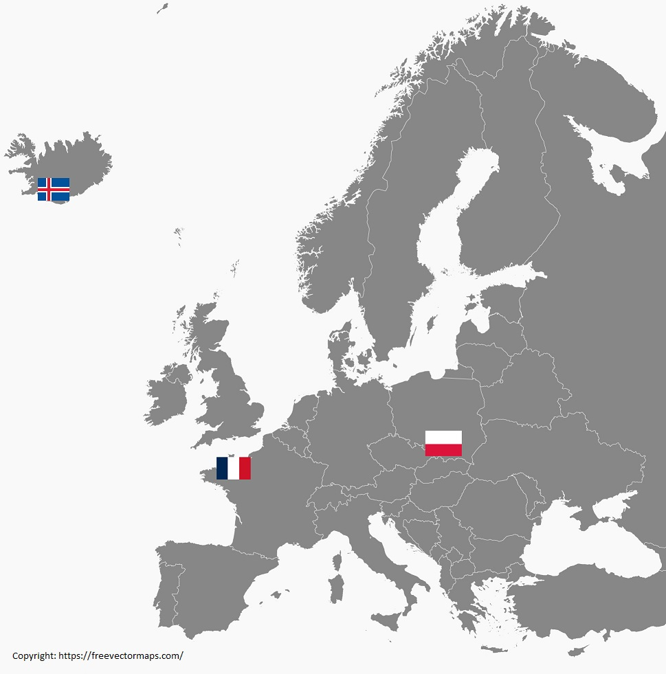
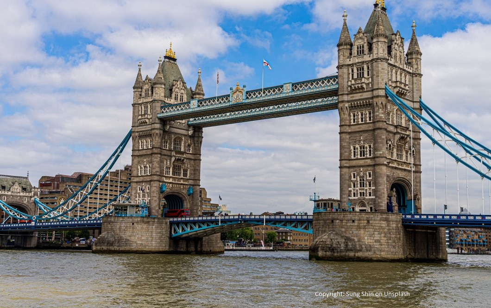
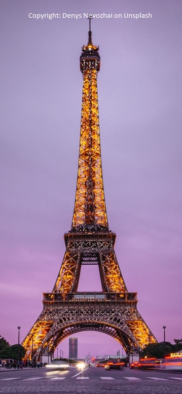
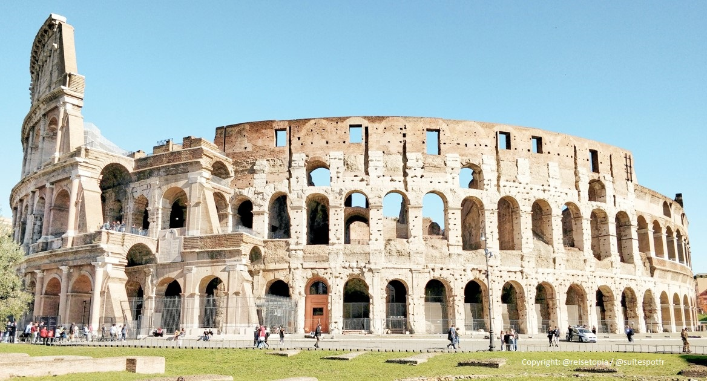

Europe's little known, interesting destinations (in my humble opinion)

Europe is second smallest continent in the world,
but thanks to its diversity and ages long history, it has a lot to offer.
Everyone has heard about Tower Bridge in London,
Eiffel Tower in Paris or Colosseum in Rome.



My picks are less obvious, but definitely worth visiting.